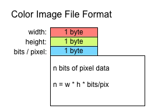

Бинарное кодирование цветного изображения v.5
Вот структура формата файла для цветного изображения. Вы можете начать с примера ниже. Скопируйте / Вставьте биты.
Для установки ширины, высоты и битов / пиксель, вы можете ввести его прямо в двоичный код или использовать ползунки и числовые поля.
